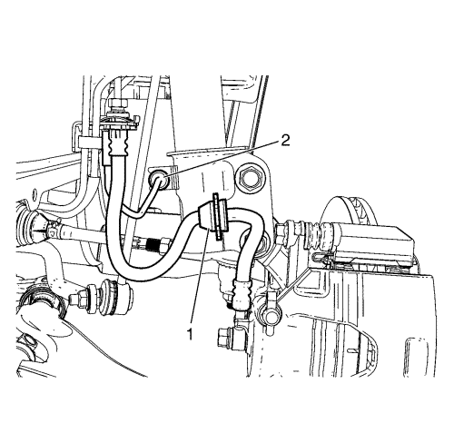
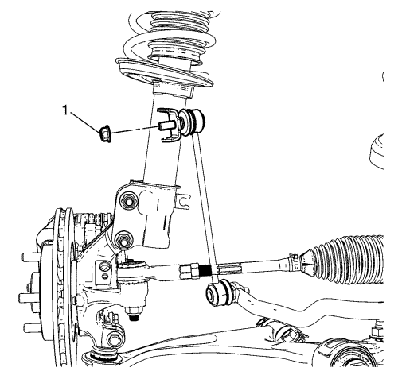
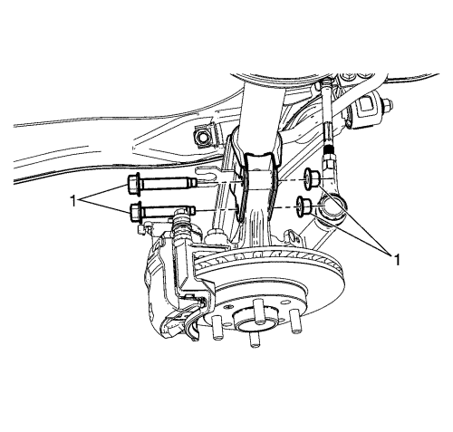
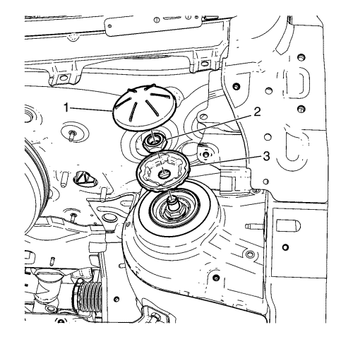

Sustitución del conjunto del refuerzo
Herramientas especiales
CH-49375 Llave
Si desea informarse sobre herramientas regionales equivalentes, consultar Herramientas especiales .
Procedimiento de desmontaje
- Elevar el vehículo y soportarlo de manera segura. Consultar Elevación del vehículo con un gato .
- Desmonte la rueda del vehículo. Consultar Desmontaje y montaje de los neumáticos y las ruedas .

- Suelte el pasacables del tubo flexible del freno (1) del soporte del refuerzo.
- Suelte el pasacables del mazo de cables del sensor de velocidad de la rueda (2) del soporte de refuerzo, si está equipado con ABS.

- Desmonte la tuerca de retención de la varilla del eje estabilizador al refuerzo (1) y separe la varilla del estabilizador del refuerzo.

- Desmonte los pernos y las tuercas que unen la mangueta al soporte (1).
- Bajar el vehículo.
- Desmonte el panel inferior de la cámara. Consultar Sustitución del panel inferior de la cámara .

- Retire el conjunto del refuerzo (1).
- Usando la llave CH-49375, desmonte la tuerca de montaje superior del refuerzo (2).
- Desmonte la placa de montaje del refuerzo (3).
- Separe el refuerzo frontal de la mangueta.
- Retire del vehículo el conjunto del refuerzo frontal.
Procedimiento de montaje
- Monte en el vehículo el conjunto del refuerzo frontal.
- Monte la placa de montaje del refuerzo (3).
Precaución: Consulte Precaución con las fijaciones en la sección Prólogo
- Usando la llave CH-49375, monte la tuerca de montaje superior del refuerzo (2) y apriétela a 65 N·m (48 lib. pie).
- Monte el conjunto del refuerzo (1).
- Monte el panel inferior de la cámara. Consultar Sustitución del panel inferior de la cámara .
Precaución: Consulte Precaución al elevar el vehículo y usar un gato en la sección Prólogo
- Elevar el vehículo y soportarlo de manera segura.
- Monte el refuerzo frontal en la mangueta.
- Monte los pernos y tuercas de retención de la mangueta al soporte (1) y apriételos a 100 N·m (74 lib. pie).
- Monte la varilla del estabilizador al refuerzo y monte la tuerca de retención de la varilla del eje estabilizador al soporte (1) y apriete a 43 N·m (32 lib. pie).
- Monte el pasacables del mazo de cables del sensor de velocidad de la rueda (2) en el soporte de refuerzo, si está equipado con ABS.
- Monte el ojal del tubo flexible del freno (1) en el soporte del refuerzo.
- Monte el conjunto de neumático y llanta. Consultar Desmontaje y montaje de los neumáticos y las ruedas .
- Bajar el vehículo.
- Compruebe la alineación de las ruedas delanteras. Consultar Especificaciones de alineación de rueda .
| © Copyright Chevrolet. Reservados todos los derechos |